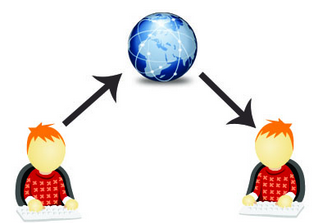
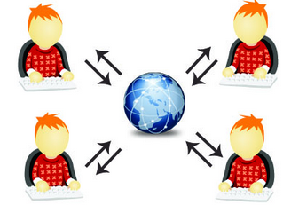

Web 1.0Dans les années 1990, c'est l'émergence du web 1.0, autrement appelé web traditionnel ou encore "web statique".Il est centré sur la distribution d’informations. Il se caractérise par des sites orientés produits, qui demandent peu l’intervention des utilisateurs. Les premiers sites d’e-commerce datent de cette époque.  |
Web 2.0Dans les années 2000, on parle du un web social. Il insiste sur la dimension de partage et d’échange d’informations et de contenus (textes, vidéos, images ou autres). Il voit l’émergence des réseaux sociaux, des smartphones et des blogs. Le web se démocratise et se dynamise, il n'est plus statique. Le consommateur est toujours plus sollicité afin de donner son avis en laissant des commentaires et il y prend goût.  |
Web 3.0Depuis 2010, le web 3.0 aussi appelé web sémantique, vise à organiser la masse d’informations disponibles en fonction du contexte et des besoins de chaque utilisateur, en tenant compte de sa localisation, de ses préférences, etc. C’est un web qui tente de trier les données, de leur donner un sens. Ce web est plus portable et fait le rapprochement entre le monde réel et le monde virtuel. Il répond aux besoins d’utilisateurs en les gardant toujours connectés à travers une multitude de supports et d’applications. |
Web 4.0Actuellement, nous pouvons dire que nous sommes vraiment passés dans la nouvelle ère du numérique. Le web 4.0 est un web intelligent, il effraie autant qu’il fascine, puisqu’il vise à immerger l’individu dans un environnement (web) de plus en plus prégnant avec de nombreuses questions ouvertes quant à la protection de la vie privée, au contrôle des données, etc. |